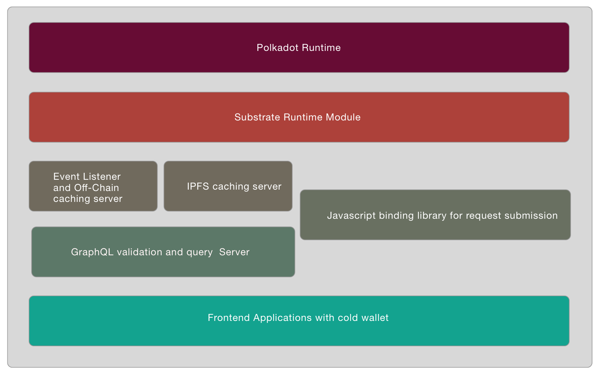

Architecture
The protocol is mainly constructed with following parts:
- Litentry Runtime
- Litentry Authenticator Mobile App
- Litentry DApp Playground
- Litenry IPFS Data Center
- Litentry SDK
- Litentry GraphQL Caching Server

Other than web 2.0 architectures, we are suppose to build a decentralized ecosystem with Blockchain as backend services than cloud or single node server.
Runtime
Litentry Runtime is built with Substrate, as such it inherits leading edge blockchain technologies.
We use offchain worker to fetch identity related data, and this data does not need to be stored centrally but on the user's client or a decentralized storage. Thus remove the uncertain and privacy issue by the client side applications.
We aim to be one of the first Parachains on the Polkadot and Kusama Network. As such we will benefit from this thriving cross-chain ecosystem.
User Side
The user has full control of their identity data, the data generated from Apps and the flows to their decentralized storage like IPFS or Arweave. The user's true identity is anonymous, cryptographic separated. <!-- -->
Litentry Authenticator
On user side we have Litentry Authenticator as user's mobile data hub.
Personal users would like to use an application to manage all its identities, it could also become a Hub connected to different interest IoT devices. For example, directly buying the authorization or the data from other IoT devices. With the advantage of GPS of mobile phone, it could further integrate with LBS (Location Based Services).
In order to work in a fully decentralized scenario, itself also need to integrate a cold wallet, where could keep a user's private key in a secure environment provided by Android or iOS.
DApps build with Litentry Protocol
With Litentry SDK, developers could easily build fully decentralized Apps or Services. User could directly signin without password and without registration. Simply with a Cryptographic QR code. Once signed on the App would use IPFS, Arweave or even on-chain key value database for storing user data, instead of storing data on their own centralised backend server.
By doing this we are converting an app-centric internet to a user-centric one.
Litentry IPFS Data Center
Litentry uses OrbitDB to offer an IPFS database support. In the Data Center, user may check their identity related data and tokens.
In the future we will implement Arweave and on-Chain key value storage.
Middleware Layer
It mainly includes:
-
Event listener and off-chain caching server: With cached data the query load on the blockchain is dramatically reduced, furthermore, it saves the caching data on a centralized database in order to improve the speed of application-based blockchain query, like Infura for Ethereum. A relay script server is also built here, to automatically trigger an event periodically regarding block generation.
-
GraphQL caching server: Since IPFS is still under testing, we currently use graphql caching server to improve user experience for syncing the data, it is also caching anonymous data, and improve data query speed.
-
Validation and query server: validate the authorization tokens with HTTPS request for IoT devices or application.
-
Client side SDK library: The javascript binding library will directly connect the front-end applications with Blockchain, for example, React or React Native applications.